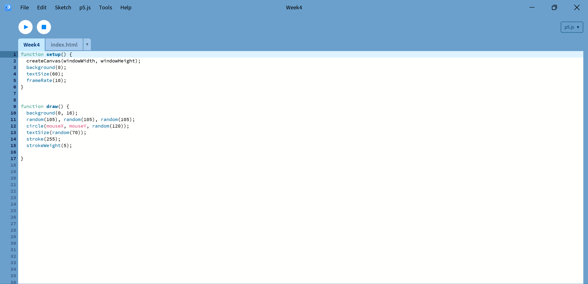

Fun fact 1: Cates are the best animal ever :3
Eat breakfast? -> Heads
(I just ate a fried egg).
Go on my phone while on the train to Uni? -> Tails
(I just stared out the window, the weather was quite nice).
It's nearly class time, should I get a coffee? -> Tails
(I guess I just saved $7).
I am still in class...
I am a good student so i got a free pass this hour
So hungryyyyyy, should I eat on campus? -> Heads
(I got a bowl of lanzhou noodle! Yummy Yummy).
My friend invited to go on a small walk but I am studying, should I still go? -> Tails
(I decided to stay and study, but I feel a bit guilty).
I have a group project meeting soon, is it finally time to get a coffee? -> Heads.
(The algorithm was on my side! I got a simple latte and it was delicious as always.)
Time to start the watching the lecture. Should I sit in the front row? -> Tails
(Phew, sitting close to the lecturer sometimes scares me).
It's break time during the lecture. Bathroom time? -> Heads
(I did't really need to go but took some fresh air on the way there).
Kinda hungry again... should I buy something in the city? -> Heads
(I decided to grab a matcha sundae as a sweet treat for my long day at Uni).
Still on the way home and feeling tired. Should I take a break by playing a round of TFT? -> Tails
(I guess I am not playing until later :/ so I just listened to some music).
Finally home from a long day. Should I celebrate with a movie night? -> Heads
(I decided to watch my some youtube and unwind).
will you be a
slave to the algorithm?
